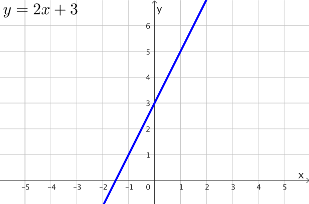
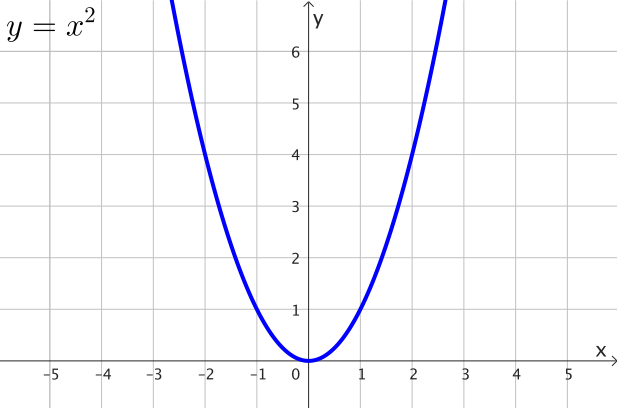
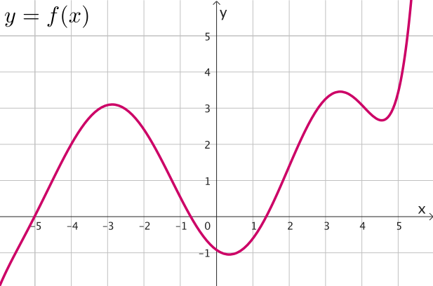
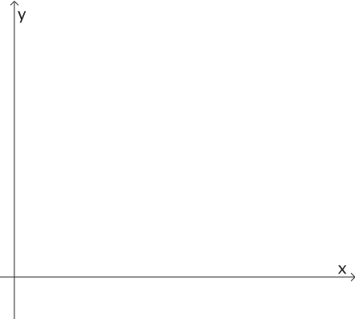
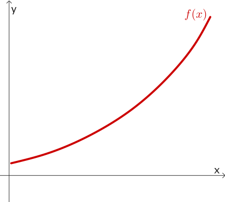
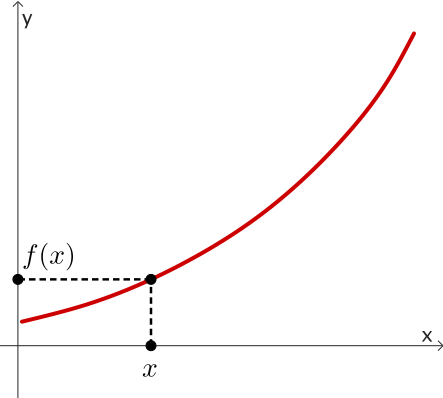
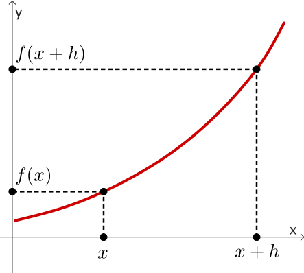
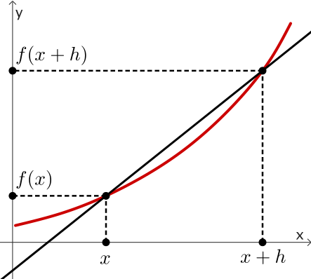
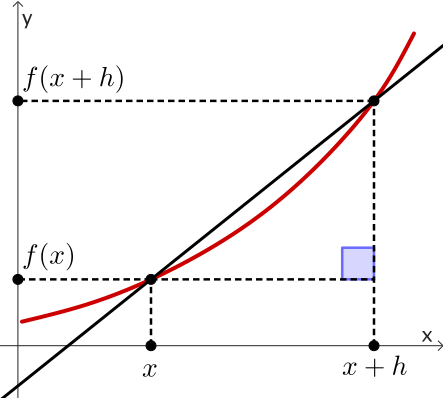
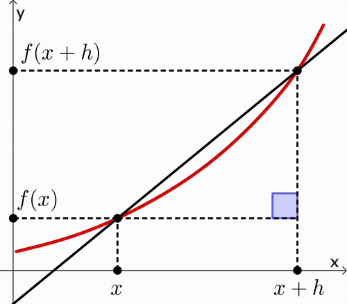

Foundation Mathematics
1017SCG
Week 10

Topics
- Definition of the Derivative (first principles)
- Tables of Derivatives
- Applications of Derivatives (Turning points, Greatest and Least values, Tangent lines)
Definition of the Derivative (first principles)

Definition of the Derivative (first principles)

Definition of the Derivative (first principles)

What is the gradient of any possible function? 🤔
Definition of the Derivative (first principles)






Definition of the Derivative (first principles)
|
|
Average Gradient $\quad= \dfrac{f(x+h)-f(x)}{h}$ |
Definition of the Derivative (first principles)
|
 |
Average Gradient $\quad= \dfrac{f(x+h)-f(x)}{h}$ Gradient of the curve $=\ds\lim_{h\ra 0} \dfrac{f(x+h)-f(x)}{h}$ |
Definition of the Derivative (first principles)
Gradient of a curve $\,\ra\,$ Slope
We call it the instantaneous rate of change.
The Derivative of the function $y=f(x)$ is given by:
$\dfrac{dy}{dx}=$ $\ds \lim_{h\ra 0} \frac{f(x+h)-f(x)}{h}$
Example 1
Compute the derivative of $y = 3x + 7$ using first principles.
Write $\,f(x)= 3x+ 7 .$ Then
$f(x+h)$ $=3(x+h) + 7$ $=3x + 3h + 7$
Thus
$\dfrac{f(x+h)-f(x)}{h}$ $=\dfrac{(3x+3h+7) -(3x+7)}{h}$ $=\dfrac{3h}{h}$ $=h$
Hence $\;\ds \lim_{h\ra 0}\dfrac{f(x+h)-f(x)}{h}$ $=\ds \lim_{h\ra 0} h$ $=0$
Example 2
Compute the derivative of $y = x^2$ using first principles.
Write $\,f(x)= x^2.$ Then
$f(x+h)$ $=(x+h)^2$ $=x^2 + 2xh + h^2$
Thus
$\;\; \dfrac{f(x+h)-f(x)}{h}$ $=\dfrac{\left(x^2 + 2xh + h^2\right) -\left(x^2\right)}{h}$
$\qquad \qquad \qquad \;\;\;\, =\dfrac{ 2xh + h^2}{h}$ $=\dfrac{ \left(2x + h\right)h}{h}$ $=2x + h$
Example 2
Compute the derivative of $y = x^2$ using first principles.
Write $\,f(x)= x^2.$ Then
👉 $\;\;\dfrac{f(x+h)-f(x)}{h}$ $=2x + h$
Take $\;\ds \lim_{h\ra 0}\dfrac{f(x+h)-f(x)}{h}$ $=\ds \lim_{h\ra 0} 2x + h$ $=2x$

Big question
Can we always compute the derivative of any function $f(x)$ using the formula \[ \ds \lim_{h\ra 0}\frac{f(x+h)-f(x)}{h}? \]


Consider $\;y=x^3$
\( \begin{align*} \frac{dy}{dx} &= \lim_{h \to 0} \frac{f(x+h) - f(x)}{h} \\ &= \lim_{h \to 0} \frac{(x+h)^3 - x^3}{h} \\ &= \lim_{h \to 0} \frac{x^3 + 3x^2h + 3xh^2 + h^3 - x^3}{h} \\ &= \lim_{h \to 0} \frac{3x^2h + 3xh^2 + h^3}{h} \\ &= \lim_{h \to 0} \left( 3x^2 + 3xh + h^2 \right) \\ &= 3x^2 \end{align*} \)

Consider $\;y = x^4 - x^3 + 2x^2 - 1$
\( \begin{align*} \frac{dy}{dx} &= \lim_{h \to 0} \frac{f(x+h) - f(x)}{h} \\ &= \lim_{h \to 0} \frac{(x+h)^4 - (x+h)^3 + 2(x+h)^2 - 1 \;-\; (x^4 - x^3 + 2x^2 - 1)}{h} \\ &= \lim_{h \to 0} \frac{(x^4 + 4x^3h + 6x^2h^2 + 4xh^3 + h^4) - (x^3 + 3x^2h + 3xh^2 + h^3)}{h} \\ &\quad + \frac{(2x^2 + 4xh + 2h^2) - 1 - (x^4 - x^3 + 2x^2 - 1)}{h} \\ &= \lim_{h \to 0} \frac{x^4 + 4x^3h + 6x^2h^2 + 4xh^3 + h^4 - x^3 - 3x^2h - 3xh^2 - h^3}{h} \\ &\quad + \frac{2x^2 + 4xh + 2h^2 - 1 - x^4 + x^3 - 2x^2 + 1}{h} \\ &= \lim_{h \to 0} \frac{4x^3h + 6x^2h^2 + 4xh^3 + h^4 - 3x^2h - 3xh^2 - h^3 + 4xh + 2h^2}{h} \\ &= \lim_{h \to 0} \frac{4x^3h - 3x^2h + (6x^2h^2 - 3xh^2 + 2h^2) + (4xh^3 - h^3) + h^4}{h} \\ &= \lim_{h \to 0} \left( 4x^3 - 3x^2 + (6x^2 - 3x + 2)h + (4x - 1)h^2 + h^3 \right) \\ &= 4x^3 - 3x^2 + 4x \end{align*} \)

Table of Derivatives
| Function $(y)$ | Derivative $\left(\frac{dx}{dy}\right)$ |
| $x^n$ | $nx^{n-1}$ |
| $ax^n$ | $anx^{n-1}$ |
| $c=$ constant | $0$ |
| $\sin(x)$ | $\cos(x)$ |
| $\cos(x)$ | $-\sin(x)$ |
| $e^x$ | $e^x$ |
| $\ln (x)$ | $\dfrac{1}{x}$ |
Examples: $ax^n$
• $y= x^3$
$\quad \ds \frac{dy}{dx} $ $= 3x^{3-1}$ $= 3x^{2}$
• $y= 5x^4$
$\quad \ds \frac{dy}{dx} = (4) 5x^{4-1}$ $= 20x^{3}$
• $y= 124$
$\quad \ds \frac{dy}{dx} =0$
Examples: $a\sin(x),\,b \cos(x)$
• $y= 10 \cos(x)$
$\quad \ds \frac{dy}{dx} $ $= -10\sin(x)$
• $y= -3 \sin(x)$
$\quad \ds \frac{dy}{dx} = -3 \cos(x)$
• $y= 2\sin(x) + 3 \cos(x)$
$\quad \ds \frac{dy}{dx} =2\cos(x) - 3 \sin(x)$
Examples with $ae^x$
• $y= 2e^x$
$\quad \ds \frac{dy}{dx} $ $= 2e^x$
• $y= -5 e^x$
$\quad \ds \frac{dy}{dx} = -5 e^x$
Examples with $a\ln(x)$
• $y= -3\ln(x)$
$\quad \ds \frac{dy}{dx} $ $= -3\left(\dfrac{1}{x}\right)$ $= -\dfrac{3}{x}$
• $y= 8\ln(x)$
$\quad \ds \frac{dy}{dx} $ $= 8\left(\dfrac{1}{x}\right)$ $= \dfrac{8}{x}$
Combined functions
• $y= 2x^5 + 3e^x + 5\sin(x)$
$\quad \ds \frac{dy}{dx} $ $= (5)2x^{5-1}$ $+ \,3e^x$ $+\, 5\cos(x)$
$\quad \quad \;\;= 10 x^4 + 3e^x + 5 \cos(x)$
• $y= \dfrac{1}{x^5}+ 7\ln(x)$ $=x^{-5}+ 7 \ln(x)$
$\quad \ds \frac{dy}{dx} $ $= (-5)x^{-5-1}$ $+ \,7\left(\dfrac{1}{x}\right)$
$\quad \quad \;\;= -5 x^{-6} + \dfrac{7}{x}$ $= -\dfrac{5}{x^6} + \dfrac{7}{x}$